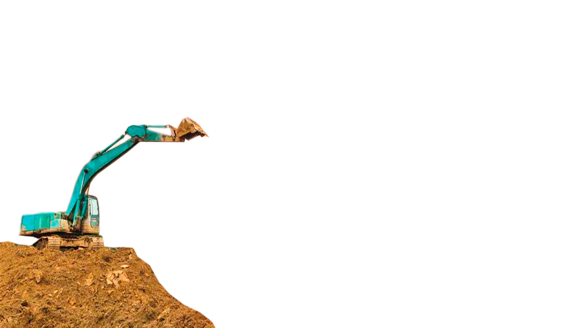
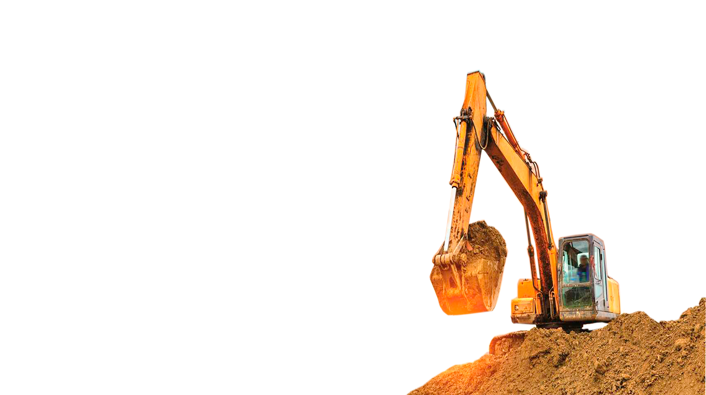
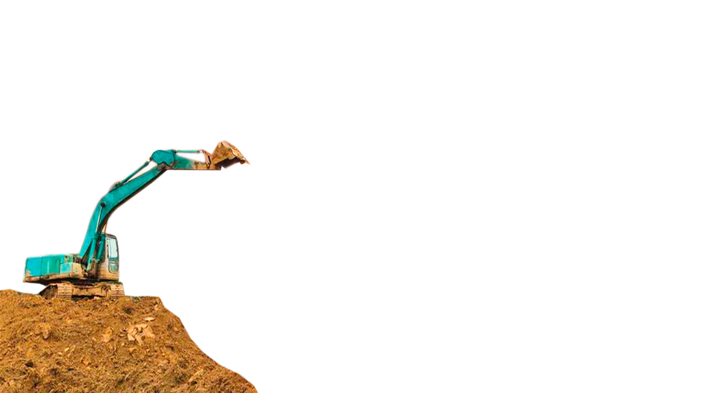
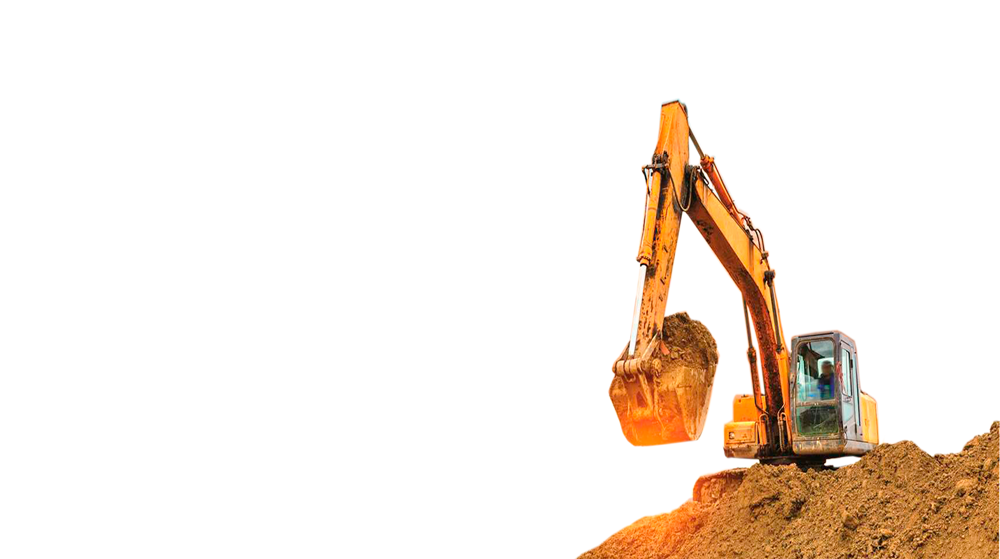

En C&R Construcciones SAS, nos enorgullece ofrecer servicios de construcción de alta calidad y soluciones innovadoras para satisfacer las necesidades de nuestros clientes. Con más de 15 años de experiencia en la industria, nos hemos posicionado como líderes en el sector de la construcción, destacando por nuestra excelencia y compromiso en cada proyecto.
Nuestro equipo está integrado por profesionales altamente capacitados y especializados en diferentes áreas de la construcción. Desde arquitectos y diseñadores hasta ingenieros y técnicos, cada miembro de nuestro equipo aporta su experiencia única y pasión por la construcción, garantizando resultados excepcionales en cada proyecto que emprendemos.